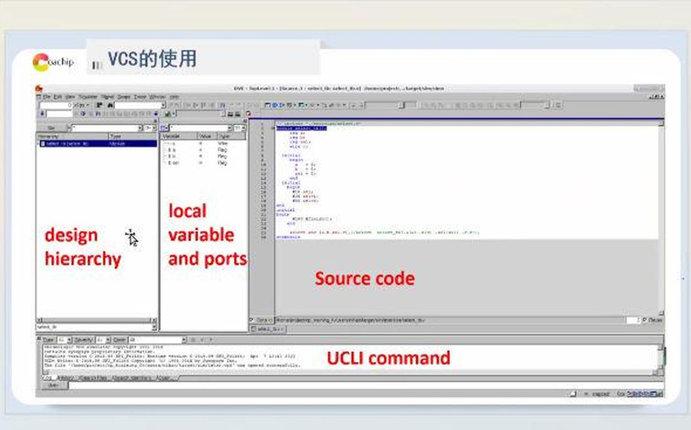
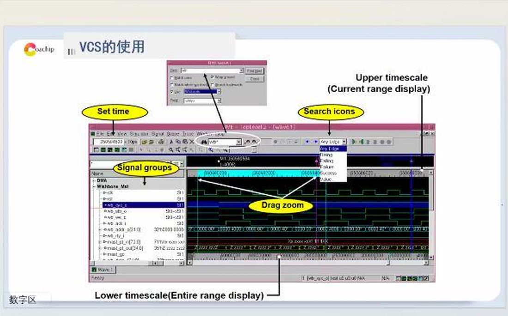
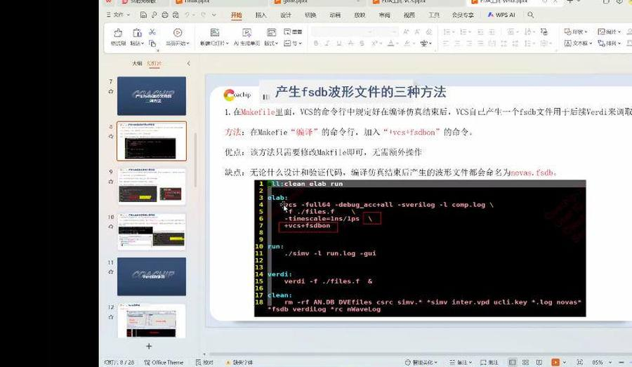
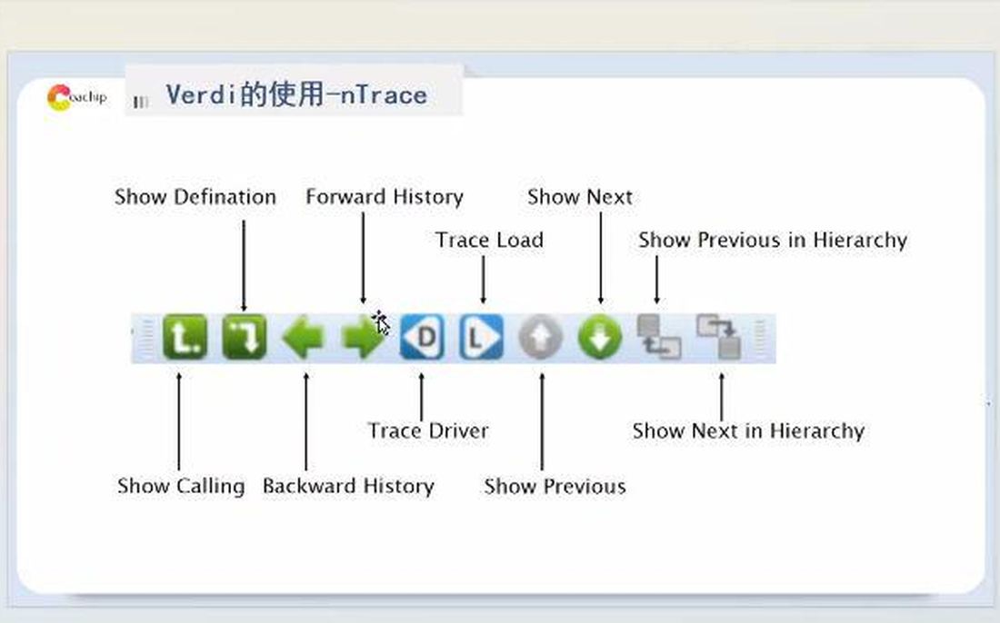
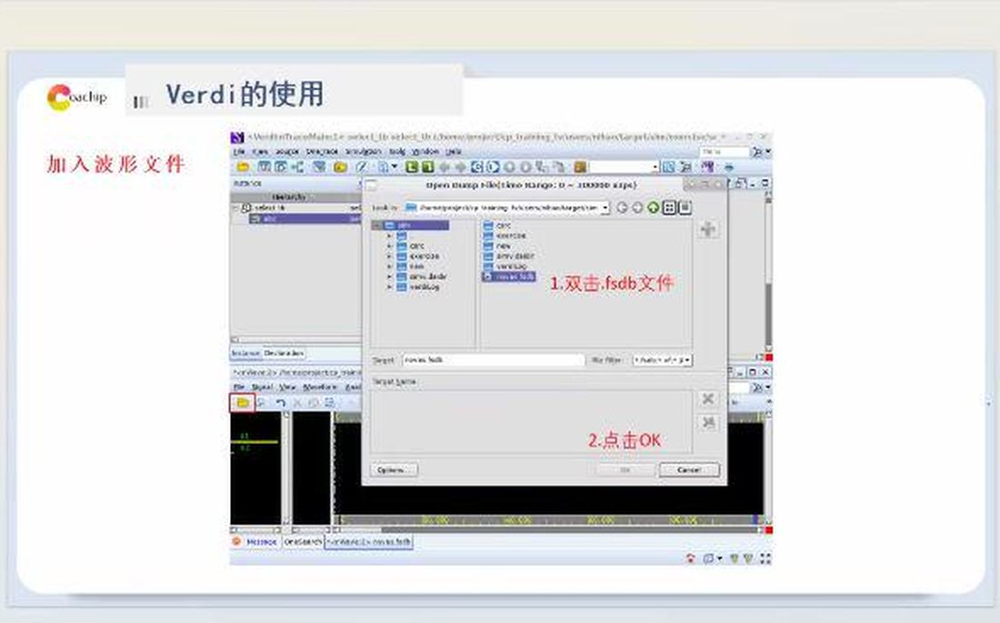

从一个 mux2to1 开始，走完 IC 验证的编译—仿真—看波形—溯源全链路
这套课件是一堂完整的实操课：从 Linux 工程目录、Makefile、VCS 三步式编译仿真，到 DVE 看波形、产生 fsdb、再用 Verdi 的 nTrace / nWave / nSchema 定位 bug。下面 13 个关卡把课件里的每一个操作都变成了可以点、可以敲、可以出错的练习。
能真的动手
命令行终端、DVE 界面、Verdi nTrace/nWave/nSchema、Makefile 编辑器，全部是交互模拟，不是视频。
课件全覆盖
EDA 工具表、vlogan/vcs/simv 选项、DVE 波形窗口组成、fsdb 三种产生方式、nTrace 工具栏逐个拆解。
错误也是课程
少写 -debug_access、Makefile 用了空格、两种 fsdb 方法混用……故意犯错能看到真实报错。
01学习地图
每一页读完点右下角「下一关」，左侧目录会打上绿点，顶部进度条会记录你完成了多少关（进度保存在本地浏览器）。
02课件里的实验对象
整堂课围绕一个 2 选 1 数据选择器展开。它足够小，小到你一眼能看懂全部逻辑；又足够典型，覆盖了编译、仿真、波形、层次化追踪的所有动作。
module mux2to1 ( input a, // 输入 A input b, // 输入 B input s, // 选择信号 output reg out // 输出 ); always @(*) begin if (s) begin out = b; end else begin out = a; end end endmodule
// 激励：先复位，再切换 a / b / s initial begin a = 0; b = 1; s = 0; #10 a = 1; #10 b = 0; s = 1; #10 $display("t=%0t out=%b", $time, out); #4000 $stop; end // 课件里的 fsdb 方法二：写在 tb 的 initial 块 initial begin $fsdbDumpfile("test.fsdb"); $fsdbDumpvars; end
EDA 工具全景：你手里的 VCS 和 Verdi 站在流程的哪一格
课件第一张内容页就给出了一张「工具—功能」对照表。先建立全局坐标，后面每个命令才知道自己为什么要敲。
A什么是 EDA
EDA = electronic design automation（电子设计自动化），指利用计算机辅助设计（CAD）软件，来完成超大规模集成电路（VLSI）芯片的功能设计、综合、验证、物理设计（包括布局、布线、版图、设计规则检查等）等流程的设计方式。
可编程逻辑阵列、标准单元库（与或非门）、全/半定制设计、专用集成电路设计是 EDA 工具的硬件要求。在电子设计自动化出现之前，设计人员必须手工完成集成电路的设计、布线等工作 —— 因为当时集成电路的复杂度还远不及现在。
B课件那张工具表（点击卡片看它在流程中的位置）
| EDA 工具举例 | 功能 | 本课程覆盖 |
|---|---|---|
| VCS / QuestaSim / NC | 编译仿真 | 核心整门课的主线 |
| Verdi | 可视化工具 | 核心nTrace / nWave / nSchema |
| SpyGlass | 语法检查（Lint） | 后续课程 |
| Jasper | property 验证 | 后续课程 |
| DC | 逻辑综合 | 后续课程 |
| IC Compiler | 布局布线 | 后续课程 |
| PrimeTime | 静态时序分析 | 后续课程 |
| PowerArtist | 功耗分析 | 后续课程 |
| Calibre | 物理检查 | 后续课程 |
| LEC | 一致性检查 | 后续课程 |
| StarRC | RC 参数提取 | 后续课程 |
| VC Static | ISO 检查 | 后续课程 |
| DFT Mentor | DFT | 后续课程 |
C为什么先学这两个
VCS 负责把 Verilog 变成能跑的仿真器，并吐出波形；Verdi 负责把波形和源代码、层次结构、逻辑图绑在一起看。验证工程师 70% 的时间都花在这两件事上：跑起来和找出为什么不对。
工程目录与环境：以后所有命令都在 sim/ 里敲
课件开头花了很长时间在远程 Linux 服务器上 ls、cd、看时间戳。这不是浪费 —— 目录结构错了，后面每条命令都会失败。
A标准工程结构
mux2to1/ ├── rtl/ │ └── mux2to1.v # 设计代码 ├── tb/ │ └── mux2to1_tb.v # 测试平台 └── sim/ # ← 所有命令在这里敲 ├── files.f # 源文件清单 ├── Makefile # 自动化脚本 ├── run.tcl # UCLI / fsdb 脚本 ├── wave_gen.tcl # 课件里的另一种命名 ├── novas.rc # Verdi 资源文件 └── novas.conf # Verdi 界面配置
编译后会多出什么
# 编译产物 csrc/ # 生成的 C 源码 simv # 可执行仿真器（最重要） simv.daidir/ # 编译数据库 ucli.key # UCLI 授权/会话文件 comp.log # 编译日志 # 仿真产物 inter.vpd # DVE 的 VCD+ 波形 DVEfiles/ # DVE 配置 dump.fsdb # Verdi 的 FSDB 波形 run.log # 仿真日志
Bfiles.f：把一长串路径收进一个文件
课件里 files.f 只有两行，而且是绝对路径：
1 /home/project/cp_training_fv/users/nihao/target/sim/exercise/select.v 2 /home/project/cp_training_fv/users/nihao/target/sim/exercise/select_tb.v
有了它，命令行就变成 vcs -f ./files.f，不用每次敲一长串文件名。注意顺序：一般把被例化的模块（RTL）写在前面，testbench 写在后面，VCS 好按依赖顺序解析。
Csynopsys_sim.setup（VCS_MX 混合流程才需要）
课件「VCS_MX Tool Flow」那张图里，第一步叫 Setup file: synopsys_sim.setup。纯 Verilog 流程可以忽略，但一旦混合 VHDL（vlogan + vhdlan），它会指定库映射（work / logic 库放在哪个目录）。
.../mux2to1/sim。如果你在 sim/ 外面敲 make，会得到 make: *** No targets specified and no makefile found. Stop. —— 这不是工具坏了，是你站错了目录。D动手：认识你的工作目录
ls -l 输出里 simv 是 9 万多字节的可执行文件，simv.daidir 是目录。这两个东西只有在编译成功之后才会出现 —— 下一关我们就让它们出现。Makefile：一条 make 命令，替掉几十行 vcs 参数
课件专门用一整节讲 Makefile，因为它是整个流程的「总开关」。写好之后，编译 + 仿真 + 开波形 + 清理，四个字母就能搞定。
AMakefile 能做什么
B规则的三个组成
target ... : prerequisites ... command ...
| 要素 | 名称 | 说明 |
|---|---|---|
| target | 规则的目标 | 要生成的东西，或一个「动作名」（如 all、clean） |
| prerequisites | 规则的依赖 | 目标依赖哪些文件；依赖比目标新时才重新执行 |
| command | 规则的命令行 | 必须以 TAB 字符开头（这是新手第一大坑） |
*** missing separator. Stop.。课件特别强调：必须以 TAB 字符开头。C课件里那份完整的 Makefile
1 all:clean elab run 2 3 elab: 4 vcs -full64 -debug_acc+all -sverilog -l comp.log \ 5 -f ./files.f \ 6 -timescale=1ns/1ps 7 run: 8 ./simv -gui -l run.log 9 10 verdi: 11 verdi -f ./files.f -ssf ./test.fsdb & 12 13 clean: 14 rm -rf AN.DB DVEfiles csrc simv.* *simv inter.vpd ucli.key *.log novas* *fsdb verdilog
这份文件里有三个关键设计：
- all:clean elab run —— 一条命令串起「清理 → 编译 → 仿真」，保证每次都是干净构建。
- 反斜杠 \ 续行 —— 让长命令可读；课件原话：「必要的换行符可以增强 Makefile 的可读性」。
- clean 里 rm -rf 一长串 —— 把
simv*、csrc、*.log、*fsdb全部删掉，回到干净状态。
D动手：改 Makefile，然后真的跑起来
下面这份 Makefile 在 elab 的 command 行被改成了 4 个空格（模拟新手的真实错误）。把它改成 TAB，然后点「校验并运行」。
E常用目标速查
| 命令 | 作用 | 典型输出 |
|---|---|---|
| make all | 清理 + 编译 + 仿真一条龙 | VCS 编译信息 → simv 启动 |
| make elab | 只编译（elaborate） | 生成 simv / simv.daidir / csrc |
| make run | 只跑仿真 | ./simv -gui -l run.log |
| make verdi | 打开 Verdi 并加载 fsdb | verdi -f files.f -ssf test.fsdb & |
| make clean | 清理全部产物 | rm -rf …（无输出即成功） |
VCS 三步式流程：分析 → 精化 → 仿真
课件用一张蓝色流程图讲清了 VCS_MX 的三步式（混合编译仿真）。理解这三步的边界，你就知道错误应该去哪一步找。
A三步式流程图
B纯 Verilog 流程：两步就够了
日常 RTL 仿真（本课程那个 mux2to1）不需要 vlogan，直接 vcs 一步完成「分析 + 精化」，然后 simv 跑起来：
# 第一步：编译（elaborate），生成 simv vcs -full64 -debug_access+all -sverilog -l comp.log \ -f ./files.f -timescale=1ns/1ps # 第二步：仿真 ./simv -gui -l run.log # 开 DVE 图形界面 ./simv -l run.log # 纯命令行跑 ./simv -ucli -i run.tcl # 用 tcl 脚本驱动
Cvlogan 常用选项（课件表格）
| 选项 | 含义 |
|---|---|
| -full64 | 支持 64 位模式运行 |
| -l logfile | Log file generation（输出日志到文件） |
| -q | Quiet（no internal messages and banner） |
| -nc | Suppresses copyright header |
| +v2k | Enable Verilog 2001 constructs（default since 2012.09） |
| -sverilog | Enable SystemVerilog constructs |
| -timescale=1ns/1ps | 指定仿真时间单位与精度 |
| -f file | Specify files as well as command options |
| +incdir+<dir> | Specifies search directory for included files |
| +define+<macro> | Defines a macro in the Verilog source |
vlogan -help 出来的是超长帮助：按住 Shift 可以往下翻，直接按到底退出，也可以敲 q 退出。Dvcs 常用选项（课件表格）
课件的原话是：vcs 这一步的目的是 Creates statically linked simulator executable (simv) —— 生成可执行的仿真文件。
| 选项 | 含义 |
|---|---|
| -o <simname> | Rename simulation executable（默认叫 simv） |
| -debug | Enable debug capabilities |
| -debug_all | Enable source-line debugging |
| -l <logfile> | Create runtime log file |
| -debug_access+all | 课件实战用的写法：开放全部调试访问权限（DVE / Verdi / UCLI 都需要） |
E动手：拼一条能跑通的 vcs 命令
vcs
实战一：从空目录到 simv，把编译和仿真敲出来
这一关是一个可以真的敲命令的终端。它有文件系统、有编译状态、会报错，也会在你做对时吐出 VCS 的启动横幅。左边是任务清单，完成一项勾一项。
- 用
ls看清目录里有什么 cat files.f确认源文件清单make clean清掉旧产物make elab编译出 simv./simv跑通仿真make verdi打开 Verdi
help 看支持的命令。A逐条看懂你要敲的命令
# 1. 进入 sim 目录，确认文件都在 $ ls comp.log files.f Makefile simv simv.daidir ucli.key ... # 2. 编译：一步生成 simv（约 192 秒编译 + 343 秒链接，取决于机器） $ make elab rm -rf AN.DB DVEfiles csrc simv.* ... vcs -full64 -debug_access+all -sverilog -l comp.log \ -f ./files.f -timescale=1ns/1ps Chronologic VCS simulator copyright 1991-2018 Contains Synopsys proprietary information. Compiler version O-2018.09-SP2_Full64; Runtime version O-2018.09-SP2_Full64 # 3. 仿真（-gui 进 DVE，不加则纯命令行跑完退出） $ ./simv -gui -l run.log VCD+ Writer O-2018.09-SP2_Full64 The file ".../sim/inter.vpd" was opened successfully
B课件里的真实编译输出，记住这几行
Chronologic VCS simulator copyright 1991-2018 Contains Synopsys proprietary information. Compiler version O-2018.09-SP2_Full64; Runtime version O-2018.09-SP2_Full64 CPU time: 192 seconds to compile + 343 seconds to link
看到 Compiler + Runtime 两行版本号，说明 simv 已经生成。
VCD+ Writer O-2018.09-SP2_Full64 Copyright (c) 1991-2018 by Synopsys Inc. The file ".../sim/inter.vpd" was opened successfully
inter.vpd 就是 DVE 的波形数据库，后面 DVE 里的波形全部来自它。
C三个最容易踩的坑
| 报错/现象 | 真实原因 |
|---|---|
| make: *** No targets specified and no makefile found. | 不在 sim/ 目录里，或者文件名写成了 makefile（小写 m 也可以，但要拼对） |
| bash: ./simv: No such file or directory | 还没编译，或者编译失败（看 comp.log 里的 Error） |
| Error-[MFNF] Module not found | files.f 里路径写错 / 顺序不对 / 模块名与文件名不一致 |
实战二：DVE 里把信号拖进波形窗口
课件用了十几页讲 DVE 的点击顺序。这里把它压缩成一个可以真实点击的 DVE 模拟器：层次树、变量列表、源代码、UCLI 控制台、波形窗口，全部联动。
ADVE 界面四个区（课件标注）
左上 · design hierarchy
设计层次树。绿色箭头的 + 点开可以看到实例化代码；点中某个模块，右边变量列表会跟着变。
中上 · local variable and ports
当前模块的信号列表（端口 + 内部变量）。红色箭头指的就是这个区，它随层次选择而变化。
右侧 · Source code
源代码窗口，双击信号名可以高亮它在代码中出现的位置。
底部 · UCLI command
命令行控制台。可以敲 run、fsdbDumpvars 等命令，和图形操作等价。
课件原图 · DVE 界面四区标注

B动手：完成 DVE 的 6 个操作
- 展开层次，选中
mux2to1实例 - 右键 → Add Dump，勾选 aggregates 后 Dump
- 变量列表 Ctrl+A 全选 → 右键 Add To Waves → New Wave View
- 点 Start/Continue 跑起来，波形出现变化
- 全选后右键 Set Radix 切成 Hex
- 在波形上拖拽 Drag zoom 放大一段
C课件里的三个关键动作
「在红色箭头部分按 Ctrl+A 可以全选信号，右键选择 Add To Waves → New Wave View。/ Ctrl+4」
「会出现如下界面，然后点击 start/continue 按键。」
「还是这个界面，我们依旧按 Ctrl+A 可以全选信号，右键选择 Set Radix，选择不同进制的数制。」
「选择不同进制的数制后，Value 值随着选择进制的变化而变化。」
D波形窗口的组成（课件标注图）
| 区域 / 控件 | 作用 |
|---|---|
| Set time | 跳到指定时刻，或设置当前时间 |
| Search icons | 在波形里搜索信号 / 跳转 |
| Upper timescale Current range display | 当前显示区间的时间刻度（局部） |
| Lower timescale Entire range display | 整个仿真时间的全局刻度条 |
| Signal groups | 信号分组（Aggregate / 自定义组） |
| Drag zoom | 在波形区拖拽框选放大 |
| 数字区 / Value | 每个信号当前值，随进制切换变化 |
课件原图 · 波形窗口组成

产生 fsdb 的三种方法：选错会踩坑
Verdi 只认 FSDB（Fast Signal Database）。课件用四页讲同一个标题、三种做法，并明确写了两条警告：命名不可控、两种方法不要混用。
A三种方法对照
| # | 做法 | 产物文件名 | 优点 / 缺点 |
|---|---|---|---|
| 1 | Makefile 编译命令里加 +vcs+fsdbon |
novas.fsdb（固定） |
优点：只改 Makefile，无需额外操作。 缺点：无论什么设计和验证代码，波形都叫 novas.fsdb |
| 2 | 在 tb 的 initial 块里调用 $fsdbDumpfile / $fsdbDumpvars |
自己命名，如 test.fsdb |
优点：可自己命名，便于后续保存查找。 缺点：每个 tb 都要加，工作量大 |
| 3 | sim 目录放脚本 run.tcl，Makefile 用 -ucli -i run.tcl 驱动 |
自己命名，如 mux2to1.fsdb |
优点：可自定义命名，脚本可复用，只改波形名；VCS 与 Verdi 联合仿真 |
B三种写法的原文
elab:
vcs -full64 \
-debug_acc+all \
-sverilog -l comp.log \
-f ./files.f \
-timescale=1ns/1ps \
+vcs+fsdbon
initial begin $fsdbDumpfile("test.fsdb"); $fsdbDumpvars; end
1 call {$fsdbDumpfile("mux2to1.fsdb")} 2 call {$fsdbDumpvars} 3 run
方法 3 的 Makefile 关键行：./simv -ucli -i run.tcl -l run.log。课件标注：-ucli 打开交互式命令行，启动后自动执行指定的 tcl 脚本。
+vcs+fsdbon 与方法 2 的 $fsdbDumpfile 同时存在时，你会得到 novas.fsdb 和 test.fsdb 两个文件，Verdi 加载哪个全凭运气。课件原图 · 方法 1：+vcs+fsdbon

C动手：三种方法各跑一遍，看产物
点击上面任一方法…
DVerdi 怎么加载它
# 1) 启动时用 -ssf 指定（课件 Makefile 的 verdi 目标） verdi -f ./files.f -ssf ./test.fsdb & # 2) 已经打开 Verdi，再手动加波形文件（课件第 96 页） File → Open → 选择 dump.fsdb # 或 nWave 里 ls 命令列出
Verdi：不只是看波形，而是一套调试系统
课件先讲清楚 Verdi 的出身和架构，再进界面。这一段是理解 nTrace / nSchema 为什么强的前提。
A出身与定位
VCS 和 Verdi 这两个工具目前都属于 Synopsys 公司。Verdi 最开始是由 Novas 公司设计的，2012 年被 Synopsys 收购 —— 这就是为什么工程里到处是 novas.rc、novas.conf 这样的文件名。
Verdi 自动调试平台是一种用于调试数字电路设计的高级解决方案，可用于提高复杂的片上系统（SoC）、ASIC 和 FPGA 设计效率。传统的调试工具仅依靠结构信息和发挥工程师的个人能力，从结构中推断出设计行为；Verdi 平台提供强大的技术，帮助工程师理解复杂和不熟悉的设计行为，自动化困难和繁琐的调试过程，统一各种复杂的调试环境，并推断设计的动态行为。
B架构：两个数据库 + 五种引擎 + 五个可视化
Testbench
Assertions
Specification
Layout Info
FSDB · Event Database
Structure Analysis
Behavior Exploration
Behavior Query
Knowledge Reuse
C两个数据库到底是什么
Knowledge Database
Verdi 编译设计后生成的知识库：模块层次、端口连接、驱动/负载关系、信号与源码的映射。nTrace 能「点信号跳代码、点代码看驱动」，靠的就是它。
Fast Signal Database
仿真产生的波形数据库。相比 VCD 体积小、写入快，并且支持「按信号按时间」随机访问 —— 所以 nWave 拖动时间轴不卡。
D启动 Verdi 的两个方式
# 带设计 + 波形一起打开（推荐） $ verdi -f ./files.f -ssf ./test.fsdb & # 只开界面，之后再 File → Import Design 加代码 $ verdi & # 课件里出现过的启动横幅 Release Verdi_O-2018.09-SP1 for (RH Linux x86_64/64bit) rcfile = /home/.../sim/novas.rc guiConfFile (read) = /home/.../sim/novas.conf
<nWave:2> No File Opened，直到你加载 fsdb 才会变成 dump.fsdb。课件第 95、96 页讲的就是「加入代码文件后信号出现」和「加入波形文件」两件事。E设置字体大小（课件第 94 页）
课件里还专门讲了一个「刚上手最先想调」的细节：默认字体偏小。
- Tools → Preferences 打开首选项
- 左侧选 Source Code，右侧页签选 Colors/Fonts
- 点 Font 后面的选择框，挑一个字号（如
-adobe-helvetica-medium-r-normal--12-...） - 点 Apply 立即生效
这些界面设置会写进工作目录下的 novas.rc 与 novas.conf，所以课件里 ls 能看到它们和 verdiLog 一起躺在 sim 目录里 —— 换台机器时把这两个文件带过去，界面就还是你熟悉的样子。
实战三：nTrace，把信号一路追到源头
课件对 nTrace 的定义很精炼：debug 时用来「追溯源头」的工具，追寻一个信号的来龙去脉，就是一个溯源的过程。
AnTrace 工具栏：10 个按钮解决 90% 的追踪
| 按钮 | 英文名 | 作用 |
|---|---|---|
| 显示定义 | Show Definition | 跳到信号/模块的定义处（Ctrl+双击） |
| 追踪驱动 | Trace Driver | 往「谁驱动了它」的方向走一层 |
| 追踪负载 | Trace Load | 往「它驱动了谁」的方向走一层 |
| 调用者 | Show Calling | 跳到调用当前模块的上层 |
| 下一个/上一个 | Show Next / Show Previous | 同一层里顺序切换 |
| 层次下钻 | Show Next in Hierarchy Show Previous in Hierarchy | 在层次结构里上下移动 |
| 前进/后退历史 | Forward / Backward History | 像浏览器一样回到刚才看的位置 |
课件原图 · nTrace 工具栏逐个按钮

BFind Scope：层次太深时的直达电梯
- Search Scope by Name, Active/module, Module, Task or function.
- Enter search filter using wildcards.
设计有几百个模块时，别在层次树里点。直接 Find Scope 输 *mux* 之类的通配符，一步跳过去。
CFind Signals and Instances
- Search for the full path of Signals/Instances in full design or selected scope.
- Supports wildcard characters and regular expressions.
它的价值在于「全路径」：你在 nWave 里看到一个叫 out 的信号，但设计里可能有 200 个 out。Find Signals 会把 mux2to1_tb.mux2to1.out 这样的完整路径列出来，让你确认到底看的是哪一个。
D动手：在 nTrace 里追踪一个信号
- 点工具栏 Import Design 加载 files.f
- 用 Find Scope 搜
mux2to1直跳 - 在源码里点
out看 Show Definition - 点 Trace Driver 追它的驱动
- 把
out双击送进 nWave 看波形
out 在 40ns 变成了不该出现的值。人的第一反应是「谁把它写成这样的」——Trace Driver 就是回答这个问题的；第二反应是「这个错值又影响了谁」——Trace Load。一前一后，就是一次完整的溯源。实战四：nWave 存信号、nSchema 追电路
课件最后几十页都在演示这两件事：怎么把辛苦挑出来的信号存下来，怎么在逻辑图上顺着网线找问题。
AnWave：Save / Restore Signals
- Groups（信号组）
- Containers（容器）
- Markers and status（标记与状态）
- Grid options（网格设置）
- Crossed Bars（交叉游标）
Note: If you have multiple waveform windows, the Restore Signals command will not overwrite the current simulation results.
翻译成人话：调 bug 时你花 10 分钟从几百个信号里挑出 12 个关键信号，存成 .rc 文件；下次换个仿真重跑，Restore Signals 一键全部回来，连分组和游标位置都在。
课件原图 · Verdi 里加入波形文件

BnSchema：Trace X 顺着电路走
nSchema 把 Verilog 变成逻辑图。选中一根线，按 Trace X（或 x 键）就能高亮它往上游（fan-in）或下游（fan-out）的整条路径。对组合逻辑尤其好用：不用读代码，直接看电路。
| 操作 | 效果 |
|---|---|
| 双击模块 | 进入该模块内部，展开子电路 |
| Trace X（x） | 高亮选中网线的扇入 / 扇出锥 |
| Trace Driver / Load | 跨层次追驱动与负载 |
| 与 nWave 联动 | 图上选中网线 → 波形里自动定位同一信号 |
C动手：nSchema 上追一根线
- 从 nTrace 打开 nSchema
- 点中
sel这根输入线 - 按 Trace X 高亮扇出路径
- 看 nWave 里对应信号被联动定位
D保存与恢复：一个真实的调试习惯
# 1. 调完一轮，把关键信号存下来 nWave → File → Save Signals → debug_top.rc # 2. 改了 RTL 重新仿真，波形全变了 $ make elab && ./simv -ucli -i run.tcl # 3. 打开新波形，一键恢复上次的信号布局 nWave → File → Restore Signals → debug_top.rc
Restore Signals 不会覆盖当前仿真结果 —— 它只恢复信号的排列与显示，不动数据。常见错误排查：报错信息是最好的老师
下面 6 个报错全部来自课件演示中真实出现过的场景。先自己判断原因，再点开看解析。
A一张排查顺序表
| 阶段 | 先看哪里 | 再确认 |
|---|---|---|
| 编译报错 | comp.log 第一个 Error | 文件是否都在、-sverilog 是否加、timescale 是否缺 |
| 仿真跑不起来 | ./simv 是否存在 | 编译是否真的成功（别被 Warning 骗了） |
| 没有波形 | fsdb / vpd 文件是否生成 | 是否加了 -debug_access、dump 语句是否执行到 |
| 波形是空的 | dump 的层次范围 | $fsdbDumpvars 参数、add dump 勾选的 aggregates |
| Verdi 打不开设计 | files.f 路径 | 是否用了绝对路径、编译产物是否在同一目录 |
结业测验：10 题检验你是否真的会了
全部来自课件内容。选完立即判分并给出解析，做错的题建议回到对应关卡重看。